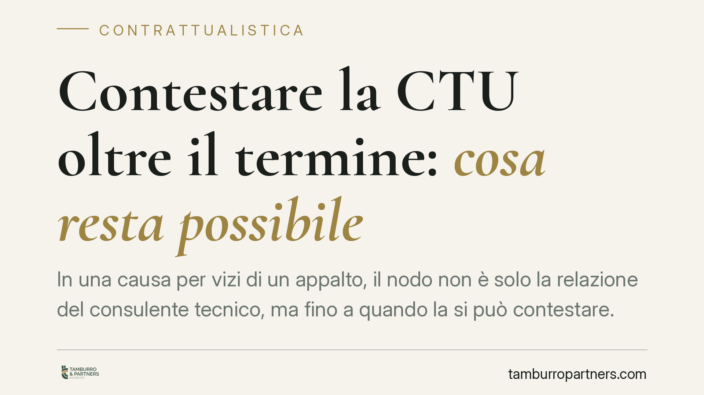

Contestare la CTU oltre il termine: cosa resta possibile
In una causa per vizi di un appalto, il nodo non è solo la relazione del consulente tecnico, ma fino a quando la si può contestare. La Cassazione distingue tra critiche al merito, proponibili anche oltre i termini fissati dal giudice, e nullità formali, soggette a decadenza. Una differenza che pesa sull'esito del contenzioso edilizio.

Il contesto: dal contratto d'appalto alla perizia
Il tema nasce quasi sempre da un contenzioso contrattuale. Un committente contesta all'impresa edile difetti dell'opera e invoca la garanzia per i vizi prevista dall'art. 1667 c.c. nell'ambito di un appalto ex art. 1655 c.c. Per accertare la natura e l'entità dei difetti, il giudice nomina un consulente tecnico d'ufficio (CTU), cioè un esperto incaricato di valutare aspetti che richiedono competenze tecniche.
La relazione del CTU diventa spesso l'elemento attorno al quale ruota la decisione. Ed è qui che si pone la domanda pratica: entro quando una parte può contestarla?
Inquadramento normativo
La consulenza tecnica è disciplinata dall'art. 195 c.p.c. La norma è stata riscritta dalla riforma Cartabia (D.Lgs. n. 149/2022): oggi il giudice fissa termini scalettati, con la trasmissione della bozza di relazione alle parti, la presentazione delle osservazioni e il deposito della relazione finale che deve tenerne conto. Resta inteso che, per le cause instaurate prima dell'entrata in vigore della riforma, si applica la versione precedente dell'articolo *ratione temporis*.
Il punto decisivo riguarda la natura dei termini fissati dal giudice per le osservazioni. Si tratta di termini ordinatori, non perentori. La distinzione, prevista in via generale dall'art. 152 c.p.c., è sostanziale: il termine perentorio, se scade, produce una decadenza non recuperabile; quello ordinatorio è prorogabile e la sua inosservanza non comporta automaticamente la preclusione dell'attività.
Su questa base si colloca un orientamento della Cassazione che merita attenzione. In assenza di una conferma puntuale degli estremi della pronuncia richiamata nelle fonti, è corretto riferirsi all'indirizzo consolidato dei giudici di legittimità, senza attribuirgli un numero o un anno non verificati. Il principio è questo: i rilievi critici che investono il merito della relazione restano ammissibili anche oltre la scadenza dei termini ordinatori, purché non introducano fatti nuovi e non riguardino nullità procedurali formali.
La distinzione che conta: merito e nullità
Qui conviene distinguere due piani che spesso vengono confusi.
Le critiche di merito riguardano il contenuto della valutazione tecnica: la correttezza delle misurazioni, la fondatezza delle conclusioni, l'adeguatezza del metodo seguito dal consulente. Il giudice, che non è vincolato alla relazione del CTU, può e deve valutare queste censure fino alla decisione. Per questa ragione restano proponibili anche dopo la scadenza dei termini ordinatori.
Le nullità formali riguardano invece vizi del procedimento: ad esempio il mancato avviso alle parti di un'operazione peritale o il mancato rispetto del contraddittorio tecnico. Qui la logica si rovescia. La nullità degli atti processuali, disciplinata dagli artt. 156 e 157 c.p.c., deve essere eccepita nella prima difesa successiva, altrimenti si considera sanata. Sul piano formale, quindi, la tempestività è determinante.
Un limite vale per entrambi i piani: la critica alla CTU non può diventare il veicolo per introdurre fatti nuovi che la parte avrebbe dovuto allegare nei termini di causa. Una contestazione di merito che, in realtà, amplia il *thema decidendum* rischia di essere dichiarata inammissibile.
Implicazioni pratiche
Per chi è coinvolto in un contenzioso su vizi dell'opera, il messaggio operativo è duplice.
Da un lato, non è tutto perduto se le osservazioni tecniche non sono state formalizzate entro il termine: le censure sul merito della relazione possono ancora essere portate all'attenzione del giudice, che non è obbligato a recepire le conclusioni del consulente.
Dall'altro, è opportuno non confondere i due piani. Una nullità procedurale non sollevata tempestivamente si sana, e non la si recupera travestendola da critica di merito. Chi intende far valere un vizio formale deve muoversi subito.
Cosa fare in concreto
- È opportuno distinguere da subito, con il proprio difensore, se la contestazione riguarda il metodo e le conclusioni del CTU (merito) o il procedimento seguito (forma).
- Conviene far verbalizzare ogni eccezione di nullità procedurale alla prima occasione utile, per evitare la sanatoria.
- È utile documentare per iscritto i rilievi tecnici, meglio se supportati da una consulenza di parte, così da fornirli al giudice anche oltre il termine per le osservazioni.
- È prudente evitare di introdurre, sotto forma di critica alla perizia, circostanze o domande non già allegate nei termini di causa.
- Per i giudizi avviati a cavallo della riforma Cartabia, conviene verificare quale versione dell'art. 195 c.p.c. si applica al caso.
Contributo informativo a cura di Tamburro & Partners - Avv. Giuseppe Tamburro. Non costituisce parere legale.
Ogni contratto ha il suo equilibrio.
Se vuoi una revisione delle clausole o una redazione su misura, scrivi allo studio. Ti rispondiamo entro un giorno lavorativo.